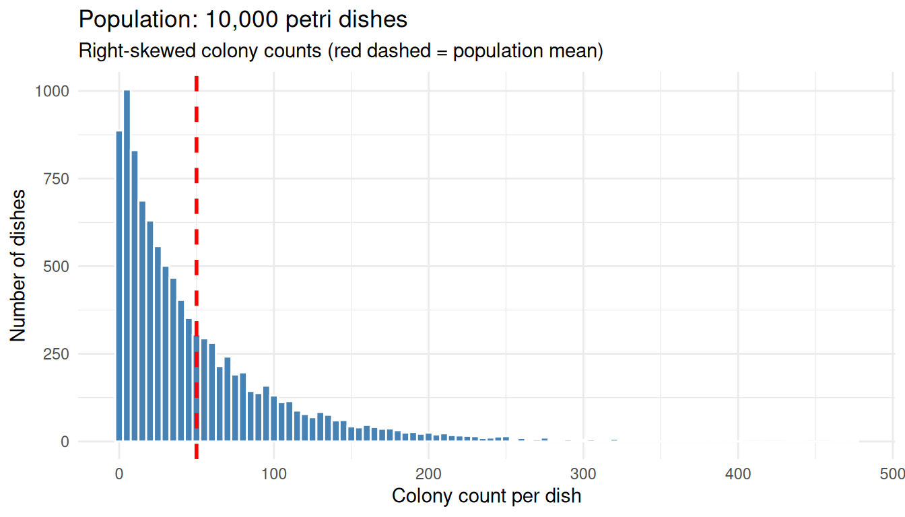
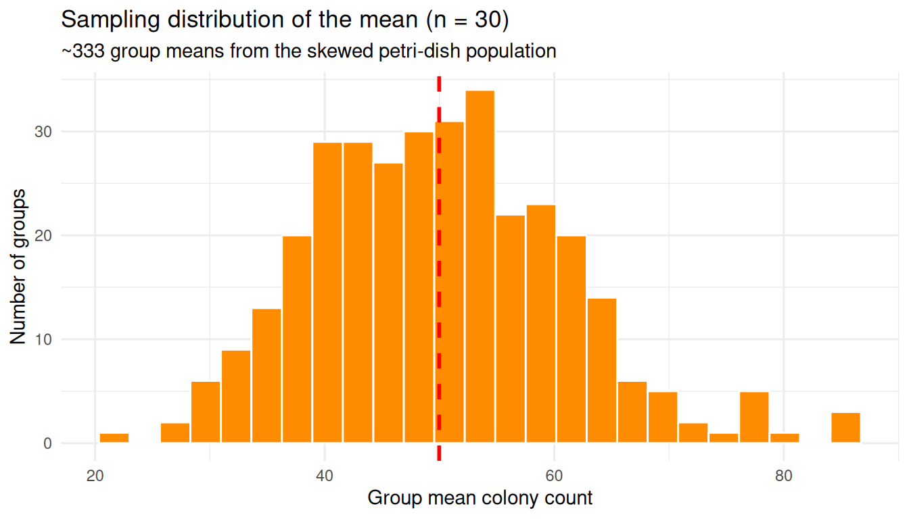
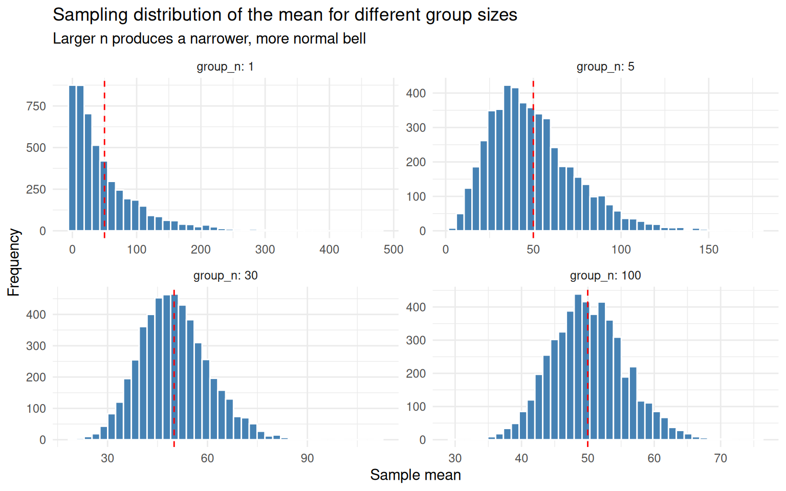
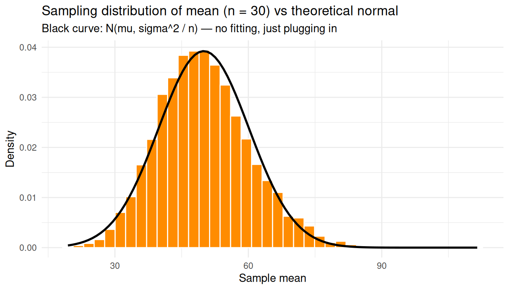
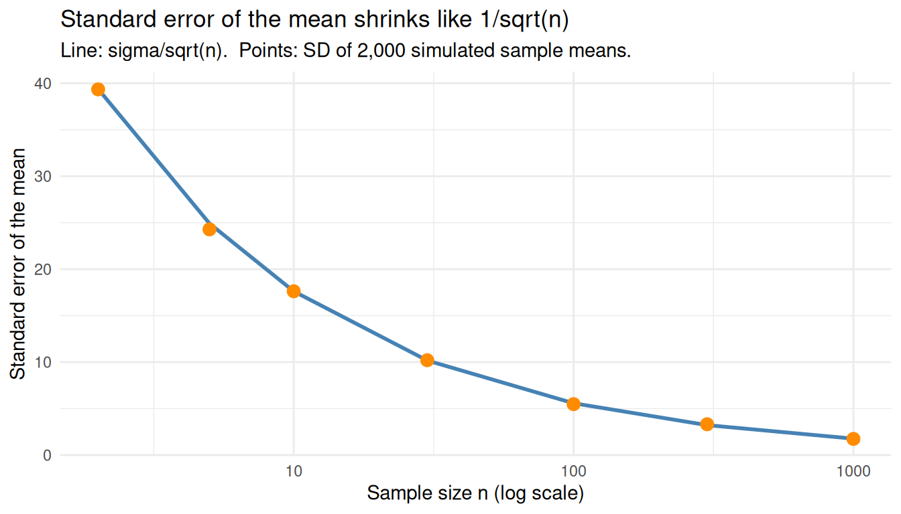
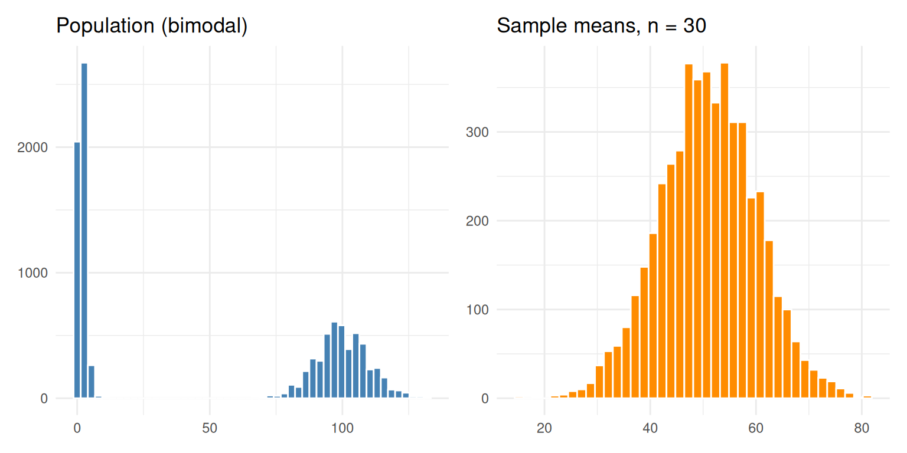

Last updated: 2026-04-15
Checks: 7 0
Knit directory: muse/
This reproducible R Markdown analysis was created with workflowr (version 1.7.2). The Checks tab describes the reproducibility checks that were applied when the results were created. The Past versions tab lists the development history.
Great! Since the R Markdown file has been committed to the Git repository, you know the exact version of the code that produced these results.
Great job! The global environment was empty. Objects defined in the global environment can affect the analysis in your R Markdown file in unknown ways. For reproduciblity it’s best to always run the code in an empty environment.
The command set.seed(20200712) was run prior to running
the code in the R Markdown file. Setting a seed ensures that any results
that rely on randomness, e.g. subsampling or permutations, are
reproducible.
Great job! Recording the operating system, R version, and package versions is critical for reproducibility.
Nice! There were no cached chunks for this analysis, so you can be confident that you successfully produced the results during this run.
Great job! Using relative paths to the files within your workflowr project makes it easier to run your code on other machines.
Great! You are using Git for version control. Tracking code development and connecting the code version to the results is critical for reproducibility.
The results in this page were generated with repository version 843c6f4. See the Past versions tab to see a history of the changes made to the R Markdown and HTML files.
Note that you need to be careful to ensure that all relevant files for
the analysis have been committed to Git prior to generating the results
(you can use wflow_publish or
wflow_git_commit). workflowr only checks the R Markdown
file, but you know if there are other scripts or data files that it
depends on. Below is the status of the Git repository when the results
were generated:
Ignored files:
Ignored: .Rproj.user/
Ignored: data/1M_neurons_filtered_gene_bc_matrices_h5.h5
Ignored: data/293t/
Ignored: data/293t_3t3_filtered_gene_bc_matrices.tar.gz
Ignored: data/293t_filtered_gene_bc_matrices.tar.gz
Ignored: data/5k_Human_Donor1_PBMC_3p_gem-x_5k_Human_Donor1_PBMC_3p_gem-x_count_sample_filtered_feature_bc_matrix.h5
Ignored: data/5k_Human_Donor2_PBMC_3p_gem-x_5k_Human_Donor2_PBMC_3p_gem-x_count_sample_filtered_feature_bc_matrix.h5
Ignored: data/5k_Human_Donor3_PBMC_3p_gem-x_5k_Human_Donor3_PBMC_3p_gem-x_count_sample_filtered_feature_bc_matrix.h5
Ignored: data/5k_Human_Donor4_PBMC_3p_gem-x_5k_Human_Donor4_PBMC_3p_gem-x_count_sample_filtered_feature_bc_matrix.h5
Ignored: data/97516b79-8d08-46a6-b329-5d0a25b0be98.h5ad
Ignored: data/Parent_SC3v3_Human_Glioblastoma_filtered_feature_bc_matrix.tar.gz
Ignored: data/brain_counts/
Ignored: data/cl.obo
Ignored: data/cl.owl
Ignored: data/jurkat/
Ignored: data/jurkat:293t_50:50_filtered_gene_bc_matrices.tar.gz
Ignored: data/jurkat_293t/
Ignored: data/jurkat_filtered_gene_bc_matrices.tar.gz
Ignored: data/pbmc20k/
Ignored: data/pbmc20k_seurat/
Ignored: data/pbmc3k.csv
Ignored: data/pbmc3k.csv.gz
Ignored: data/pbmc3k.h5ad
Ignored: data/pbmc3k/
Ignored: data/pbmc3k_bpcells_mat/
Ignored: data/pbmc3k_export.mtx
Ignored: data/pbmc3k_matrix.mtx
Ignored: data/pbmc3k_seurat.rds
Ignored: data/pbmc4k_filtered_gene_bc_matrices.tar.gz
Ignored: data/pbmc_1k_v3_filtered_feature_bc_matrix.h5
Ignored: data/pbmc_1k_v3_raw_feature_bc_matrix.h5
Ignored: data/refdata-gex-GRCh38-2020-A.tar.gz
Ignored: data/seurat_1m_neuron.rds
Ignored: data/t_3k_filtered_gene_bc_matrices.tar.gz
Ignored: r_packages_4.5.2/
Untracked files:
Untracked: .claude/
Untracked: CLAUDE.md
Untracked: analysis/.claude/
Untracked: analysis/aucc.Rmd
Untracked: analysis/bimodal.Rmd
Untracked: analysis/bioc.Rmd
Untracked: analysis/bioc_scrnaseq.Rmd
Untracked: analysis/chick_weight.Rmd
Untracked: analysis/likelihood.Rmd
Untracked: analysis/modelling.Rmd
Untracked: analysis/sampleqc.Rmd
Untracked: analysis/wordpress_readability.Rmd
Untracked: bpcells_matrix/
Untracked: data/Caenorhabditis_elegans.WBcel235.113.gtf.gz
Untracked: data/GCF_043380555.1-RS_2024_12_gene_ontology.gaf.gz
Untracked: data/SeuratObj.rds
Untracked: data/arab.rds
Untracked: data/astronomicalunit.csv
Untracked: data/davetang039sblog.WordPress.2026-02-12.xml
Untracked: data/femaleMiceWeights.csv
Untracked: data/lung_bcell.rds
Untracked: m3/
Untracked: women.json
Unstaged changes:
Modified: analysis/isoform_switch_analyzer.Rmd
Modified: analysis/linear_models.Rmd
Note that any generated files, e.g. HTML, png, CSS, etc., are not included in this status report because it is ok for generated content to have uncommitted changes.
These are the previous versions of the repository in which changes were
made to the R Markdown (analysis/clt.Rmd) and HTML
(docs/clt.html) files. If you’ve configured a remote Git
repository (see ?wflow_git_remote), click on the hyperlinks
in the table below to view the files as they were in that past version.
| File | Version | Author | Date | Message |
|---|---|---|---|---|
| Rmd | 843c6f4 | Dave Tang | 2026-04-15 | Central Limit Theorem |
Picture 10,000 petri dishes, each holding a highly variable bacterial colony count. The dish-to-dish counts are very spread out and skewed to the right: most dishes have a modest number of colonies but a handful have huge counts.
We will simulate that situation with a negative binomial distribution, which is right-skewed and a reasonable shape for count data like colony counts.
set.seed(1984)
n_dishes <- 10000
dish_counts <- rnbinom(n_dishes, mu = 50, size = 0.8)
pop_mean <- mean(dish_counts)
pop_sd <- sd(dish_counts)
tibble(
statistic = c("Population mean (mu)",
"Population SD (sigma)",
"Minimum",
"Maximum",
"Median"),
value = c(round(pop_mean, 2),
round(pop_sd, 2),
min(dish_counts),
max(dish_counts),
median(dish_counts))
) |>
knitr::kable()| statistic | value |
|---|---|
| Population mean (mu) | 49.98 |
| Population SD (sigma) | 55.70 |
| Minimum | 0.00 |
| Maximum | 477.00 |
| Median | 31.00 |
The mean sits well above the median and the maximum dwarfs the typical count due to the right skew. Here we plot the population to see the shape.
ggplot(data.frame(count = dish_counts), aes(x = count)) +
geom_histogram(binwidth = 5, fill = "steelblue", colour = "white") +
geom_vline(xintercept = pop_mean, colour = "red", linetype = "dashed", linewidth = 1) +
labs(
title = "Population: 10,000 petri dishes",
subtitle = "Right-skewed colony counts (red dashed = population mean)",
x = "Colony count per dish",
y = "Number of dishes"
) +
theme_minimal()
The original distribution is decidedly not bell-shaped.
Now do something simple:
group_size <- 30
group_id <- rep(seq_len(n_dishes %/% group_size), each = group_size)
grouped <- dish_counts[seq_along(group_id)]
group_means_30 <- tapply(grouped, group_id, mean)
tibble(
group = head(seq_along(group_means_30)),
mean_count = round(head(group_means_30), 2)
) |>
knitr::kable(caption = paste0("First 6 of ", length(group_means_30), " group means"))| group | mean_count |
|---|---|
| 1 | 41.53 |
| 2 | 39.97 |
| 3 | 28.40 |
| 4 | 30.73 |
| 5 | 49.43 |
| 6 | 45.87 |
We now have 333 numbers where each value is the average colony count over 30 dishes.
Those group means are much less spread out than the individual counts.
tibble(
quantity = c("Population SD (single dishes)",
"SD of group means (n = 30)",
"Ratio (pop SD / SD of means)",
"sqrt(30)"),
value = round(c(pop_sd,
sd(group_means_30),
pop_sd / sd(group_means_30),
sqrt(30)), 2)
) |>
knitr::kable()| quantity | value |
|---|---|
| Population SD (single dishes) | 55.70 |
| SD of group means (n = 30) | 10.92 |
| Ratio (pop SD / SD of means) | 5.10 |
| sqrt(30) | 5.48 |
The spread of the group means is roughly \(\sqrt{30}\) times smaller than the spread of single dishes; this ratio is not a coincidence and we will return to it.
This histogram looks bell-shaped, even though the original counts did not.
ggplot(data.frame(mean_count = group_means_30), aes(x = mean_count)) +
geom_histogram(bins = 25, fill = "darkorange", colour = "white") +
geom_vline(xintercept = pop_mean, colour = "red", linetype = "dashed", linewidth = 1) +
labs(
title = "Sampling distribution of the mean (n = 30)",
subtitle = "~333 group means from the skewed petri-dish population",
x = "Group mean colony count",
y = "Number of groups"
) +
theme_minimal()
The original population was lopsided; the distribution of group means is symmetric and bell-shaped. That is the CLT in action.
Increase the group size from 30 to 100 and the bell gets narrower. So far we have only looked at one group size (\(n = 30\)) and partitioned the 10,000 dishes into 333 groups exactly once. To see how the bell changes shape across different group sizes, we need a more thorough experiment:
Drawing 5,000 samples (instead of the ~333 from a single partition)
gives a smooth, high-resolution picture of the sampling distribution at
each \(n\). The helper below wraps
steps 2–3, and map_dfr() runs it across all four group
sizes.
sample_means <- function(population, n, n_samples = 5000) {
replicate(n_samples, mean(sample(population, n, replace = TRUE)))
}
set.seed(1)
sizes <- c(1, 5, 30, 100)
sims <- map_dfr(sizes, function(group_n) {
tibble(
group_n = group_n,
sample_mean = sample_means(dish_counts, group_n)
)
})
sims |>
group_by(group_n) |>
summarise(
n_samples = n(),
mean_of_means = mean(sample_mean),
se_observed = sd(sample_mean),
.groups = "drop"
) |>
knitr::kable(
digits = 3,
caption = "5,000 sample means drawn for each group size"
)| group_n | n_samples | mean_of_means | se_observed |
|---|---|---|---|
| 1 | 5000 | 50.471 | 55.731 |
| 5 | 5000 | 49.801 | 24.727 |
| 30 | 5000 | 50.043 | 10.327 |
| 100 | 5000 | 50.116 | 5.600 |
The n_samples column confirms we have 5,000 sample means
per row. Every group size lands on the same population mean
(mean_of_means \(\approx
\mu\)), but the SD of the sample means (se_observed)
shrinks as \(n\) grows — that is the
bell narrowing.
ggplot(sims, aes(x = sample_mean)) +
geom_histogram(bins = 40, fill = "steelblue", colour = "white") +
geom_vline(xintercept = pop_mean, colour = "red", linetype = "dashed") +
facet_wrap(~ group_n, scales = "free", labeller = label_both) +
labs(
title = "Sampling distribution of the mean for different group sizes",
subtitle = "Larger n produces a narrower, more normal bell",
x = "Sample mean",
y = "Frequency"
) +
theme_minimal()
group_n = 1 is just the original skewed populationgroup_n = 5 is already pulling toward symmetrygroup_n = 30 looks unmistakably normalgroup_n = 100 is the same shape, but tighterWhy does averaging tame the extremes? Think about what it would take to push a group mean of 30 dishes up to, say, 300 colonies. One unlucky dish with 300 colonies is not enough — the other 29 dishes, being typical, will pull the average back down toward the population mean of around 50. To actually land at a group mean of 300 you would need most of the 30 dishes to be unusually high at the same time. That is far less likely than any single dish being unusually high.
Two ideas are doing the work here:
Cancellation. In any random group of dishes, some will be above the population mean and some below. When you average them, the highs and lows partly cancel each other out. The mean of the group is therefore much less variable than any single dish.
Joint extremes are rare. A single dish being “extreme” might happen 5% of the time. But for an entire group mean to look extreme, you need many extreme dishes to land together by chance — and that probability shrinks dramatically as the group grows.
The Central Limit Theorem is just these two effects, made precise.
Let’s make this concrete. The population mean is around 50, so call any value well above 50 “extreme”. Rather than fix one threshold, sweep across several — 60, 80, 100, 150, 200 — and ask, for each one:
If averaging really cancels extremes, then for every threshold the second number should be smaller than the first, and the third smaller still. The gap should also widen as the threshold gets more extreme.
set.seed(2)
single_draws <- sample(dish_counts, 5000, replace = TRUE)
mean_draws_30 <- sample_means(dish_counts, 30, n_samples = 5000)
mean_draws_100 <- sample_means(dish_counts, 100, n_samples = 5000)
thresholds <- c(60, 80, 100, 150, 200)
map_dfr(thresholds, function(t) {
tibble(
threshold = t,
single_dish = mean(single_draws > t),
mean_of_30 = mean(mean_draws_30 > t),
mean_of_100 = mean(mean_draws_100 > t)
)
}) |>
knitr::kable(
digits = 4,
caption = "Probability of exceeding the threshold, by sample size"
)| threshold | single_dish | mean_of_30 | mean_of_100 |
|---|---|---|---|
| 60 | 0.2838 | 0.1530 | 0.0454 |
| 80 | 0.2010 | 0.0032 | 0.0000 |
| 100 | 0.1416 | 0.0000 | 0.0000 |
| 150 | 0.0598 | 0.0000 | 0.0000 |
| 200 | 0.0262 | 0.0000 | 0.0000 |
Read across each row: the probability shrinks fast as the group size grows. Read down each column: as the threshold gets more extreme, single dishes still manage to clear it occasionally, but the group means give up almost entirely. By a threshold of 100 a single dish is still over the bar maybe one time in ten, but a mean of 30 is essentially never that high, and a mean of 100 has effectively no chance.
Notice that the underlying population has not changed — there are just as many extreme dishes as before. What changed is that any one extreme dish now has to outvote 29 (or 99) typical neighbours in order to budge the mean past the threshold, and the typical neighbours nearly always win.
This is also why the bell narrows as \(n\) grows: the larger the group, the more cancellation happens, and the harder it is for the group mean to wander far from the population mean \(\mu\).
Formally: if you draw independent samples of size \(n\) from any population with finite mean \(\mu\) and finite variance \(\sigma^2\), the distribution of the sample mean \(\bar{X}\) approaches a normal distribution as \(n\) grows, regardless of the shape of the original population:
\[ \bar{X} \sim \mathcal{N}\left(\mu,\ \frac{\sigma^2}{n}\right) \]
We can check this directly: overlay \(\mathcal{N}(\mu, \sigma^2 / n)\) on the simulated sampling distribution at \(n = 30\) — no fitting, just plug in \(\mu\) and \(\sigma\) from the population.
predicted_se <- pop_sd / sqrt(30)
means_30 <- sims |> filter(group_n == 30)
ggplot(means_30, aes(x = sample_mean)) +
geom_histogram(aes(y = after_stat(density)), bins = 40,
fill = "darkorange", colour = "white") +
stat_function(fun = dnorm,
args = list(mean = pop_mean, sd = predicted_se),
colour = "black", linewidth = 1) +
labs(
title = "Sampling distribution of mean (n = 30) vs theoretical normal",
subtitle = "Black curve: N(mu, sigma^2 / n) — no fitting, just plugging in",
x = "Sample mean",
y = "Density"
) +
theme_minimal()
The theoretical normal curve falls right on top of the histogram even though the underlying counts were nowhere near normal.
The standard deviation of that sampling distribution, \(\sigma / \sqrt{n}\), is the standard error of the mean — how much we expect a sample mean to wobble from sample to sample:
\[ \mathrm{SE}(\bar{X}) = \frac{\sigma}{\sqrt{n}} \]
Two consequences worth highlighting: SE shrinks as \(n\) grows, but only with \(\sqrt{n}\) — to halve the SE you need four times the data. And SE is not the same as the population SD: SD describes spread of individuals, SE describes spread of averages.
Compare the predicted SE with the SD observed across many simulated sample means:
n_grid <- c(2, 5, 10, 30, 100, 300, 1000)
se_compare <- tibble(
n = n_grid,
se_predicted = pop_sd / sqrt(n_grid),
se_observed = map_dbl(n_grid, ~ sd(sample_means(dish_counts, .x, n_samples = 2000)))
)
knitr::kable(se_compare, digits = 3)| n | se_predicted | se_observed |
|---|---|---|
| 2 | 39.385 | 39.342 |
| 5 | 24.909 | 24.281 |
| 10 | 17.613 | 17.621 |
| 30 | 10.169 | 10.201 |
| 100 | 5.570 | 5.476 |
| 300 | 3.216 | 3.310 |
| 1000 | 1.761 | 1.735 |
ggplot(se_compare, aes(x = n)) +
geom_line(aes(y = se_predicted), colour = "steelblue", linewidth = 1) +
geom_point(aes(y = se_observed), colour = "darkorange", size = 3) +
scale_x_log10() +
labs(
title = "Standard error of the mean shrinks like 1/sqrt(n)",
subtitle = "Line: sigma/sqrt(n). Points: SD of 2,000 simulated sample means.",
x = "Sample size n (log scale)",
y = "Standard error of the mean"
) +
theme_minimal()
In practice we don’t know \(\sigma\), so we estimate the standard error from a single sample using the sample standard deviation \(s\):
\[ \widehat{\mathrm{SE}}(\bar{X}) = \frac{s}{\sqrt{n}} \]
Even one sample of 30 dishes already gives a reasonable estimate of how much the sample mean is likely to wobble:
set.seed(42)
one_sample <- sample(dish_counts, 30)
tibble(
quantity = c("Sample mean",
"Sample SD (s)",
"Estimated SE = s/sqrt(n)",
"True SE = sigma/sqrt(n)"),
value = round(c(mean(one_sample),
sd(one_sample),
sd(one_sample) / sqrt(30),
pop_sd / sqrt(30)), 2)
) |>
knitr::kable()| quantity | value |
|---|---|
| Sample mean | 52.73 |
| Sample SD (s) | 67.59 |
| Estimated SE = s/sqrt(n) | 12.34 |
| True SE = sigma/sqrt(n) | 10.17 |
To prove the CLT does not depend on the shape of the population, repeat with a mixture of two extremes — half the dishes near zero, half near a hundred. The population is bimodal and clearly non-normal, yet the sampling distribution of the mean is still bell-shaped and centred on the population mean.
set.seed(99)
weird_pop <- c(rpois(5000, lambda = 2),
rpois(5000, lambda = 100))
weird_means <- sample_means(weird_pop, n = 30, n_samples = 5000)
p1 <- ggplot(data.frame(x = weird_pop), aes(x)) +
geom_histogram(bins = 50, fill = "steelblue", colour = "white") +
labs(title = "Population (bimodal)", x = NULL, y = NULL) +
theme_minimal()
p2 <- ggplot(data.frame(x = weird_means), aes(x)) +
geom_histogram(bins = 40, fill = "darkorange", colour = "white") +
labs(title = "Sample means, n = 30", x = NULL, y = NULL) +
theme_minimal()
p1 + p2
We have spent the whole notebook simulating thousands of replicates because we wanted to see the sampling distribution of the mean. But what if you actually had to run this experiment in the lab? Do you need to repeat it 5,000 times — or even just five times — to estimate the mean colony count and how precise that estimate is?
The CLT says no. A single sample of \(n\) dishes is enough. Here is why: the CLT promises that the sampling distribution of \(\bar{X}\) is approximately \(\mathcal{N}(\mu,\ \sigma^2/n)\). So once you have one sample, you can estimate
You do not need to observe the sampling distribution — the CLT lets you derive it from one experiment.
To make this concrete, compare three strategies for estimating the mean colony count:
set.seed(11)
# A: one batch of 30
exp_A <- sample(dish_counts, 30)
mean_A <- mean(exp_A)
se_A <- sd(exp_A) / sqrt(30)
# B: five batches of 30
batches_B <- replicate(5, sample(dish_counts, 30), simplify = FALSE)
batch_means_B <- sapply(batches_B, mean)
mean_B <- mean(batch_means_B)
se_B <- sd(batch_means_B) / sqrt(5)
# C: one batch of 150
exp_C <- sample(dish_counts, 150)
mean_C <- mean(exp_C)
se_C <- sd(exp_C) / sqrt(150)
tibble(
strategy = c("A: 1 batch of 30",
"B: 5 batches of 30",
"C: 1 batch of 150"),
total_dishes = c(30, 150, 150),
estimate_of_mu = round(c(mean_A, mean_B, mean_C), 2),
estimated_SE = round(c(se_A, se_B, se_C), 2),
ci_low = round(c(mean_A, mean_B, mean_C) - 1.96 * c(se_A, se_B, se_C), 2),
ci_high = round(c(mean_A, mean_B, mean_C) + 1.96 * c(se_A, se_B, se_C), 2)
) |>
knitr::kable(caption = paste0(
"True population mean = ", round(pop_mean, 2),
". 95% CI computed as estimate +/- 1.96 * SE."
))| strategy | total_dishes | estimate_of_mu | estimated_SE | ci_low | ci_high |
|---|---|---|---|---|---|
| A: 1 batch of 30 | 30 | 47.10 | 10.90 | 25.73 | 68.47 |
| B: 5 batches of 30 | 150 | 47.41 | 4.05 | 39.47 | 55.34 |
| C: 1 batch of 150 | 150 | 42.33 | 4.28 | 33.95 | 50.72 |
A few things to notice:
All three strategies give a usable estimate of the mean along with a 95% CI that brackets the true value. You did not need to repeat anything to get the CI — Strategy A used only one batch and the CLT did the rest.
Strategies B and C use the same number of dishes (150) and produce SEs of roughly the same size. Splitting 150 dishes across 5 batches did not buy you extra precision. What buys precision is the total sample size \(n\), not how it is sliced.
Strategy C has a slightly tighter SE than B because it estimates \(s\) from all 150 dishes at once. B’s SE is built from only 5 batch means, so it has fewer degrees of freedom. In practice this difference is small — the dominant factor is total \(n\).
Strategy A’s CI is roughly \(\sqrt{5} \approx 2.24\) times wider than C’s. That matches the \(1/\sqrt{n}\) rule: going from \(n = 30\) to \(n = 150\) is a 5× increase in \(n\), which shrinks the SE by \(\sqrt{5}\).
So the practical recipe: run one experiment with as large an \(n\) as you can afford, then use \(\bar{x} \pm 1.96\,s/\sqrt{n}\) as your 95% CI for \(\mu\). Replication across batches is still useful for other reasons — checking for batch effects, validating that the SE assumption holds, catching technical errors — but it is not what gives you the standard error. The CLT does that for free from one sample.
sessionInfo()R version 4.5.2 (2025-10-31)
Platform: x86_64-pc-linux-gnu
Running under: Ubuntu 24.04.4 LTS
Matrix products: default
BLAS: /usr/lib/x86_64-linux-gnu/openblas-pthread/libblas.so.3
LAPACK: /usr/lib/x86_64-linux-gnu/openblas-pthread/libopenblasp-r0.3.26.so; LAPACK version 3.12.0
locale:
[1] LC_CTYPE=en_US.UTF-8 LC_NUMERIC=C
[3] LC_TIME=en_US.UTF-8 LC_COLLATE=en_US.UTF-8
[5] LC_MONETARY=en_US.UTF-8 LC_MESSAGES=en_US.UTF-8
[7] LC_PAPER=en_US.UTF-8 LC_NAME=C
[9] LC_ADDRESS=C LC_TELEPHONE=C
[11] LC_MEASUREMENT=en_US.UTF-8 LC_IDENTIFICATION=C
time zone: Etc/UTC
tzcode source: system (glibc)
attached base packages:
[1] stats graphics grDevices utils datasets methods base
other attached packages:
[1] patchwork_1.3.2 lubridate_1.9.5 forcats_1.0.1 stringr_1.6.0
[5] dplyr_1.2.0 purrr_1.2.1 readr_2.2.0 tidyr_1.3.2
[9] tibble_3.3.1 ggplot2_4.0.2 tidyverse_2.0.0 workflowr_1.7.2
loaded via a namespace (and not attached):
[1] sass_0.4.10 generics_0.1.4 stringi_1.8.7 hms_1.1.4
[5] digest_0.6.39 magrittr_2.0.4 timechange_0.4.0 evaluate_1.0.5
[9] grid_4.5.2 RColorBrewer_1.1-3 fastmap_1.2.0 rprojroot_2.1.1
[13] jsonlite_2.0.0 processx_3.8.6 whisker_0.4.1 ps_1.9.1
[17] promises_1.5.0 httr_1.4.8 scales_1.4.0 jquerylib_0.1.4
[21] cli_3.6.5 rlang_1.1.7 withr_3.0.2 cachem_1.1.0
[25] yaml_2.3.12 otel_0.2.0 tools_4.5.2 tzdb_0.5.0
[29] httpuv_1.6.17 vctrs_0.7.2 R6_2.6.1 lifecycle_1.0.5
[33] git2r_0.36.2 fs_2.0.1 pkgconfig_2.0.3 callr_3.7.6
[37] pillar_1.11.1 bslib_0.10.0 later_1.4.8 gtable_0.3.6
[41] glue_1.8.0 Rcpp_1.1.1 xfun_0.57 tidyselect_1.2.1
[45] rstudioapi_0.18.0 knitr_1.51 farver_2.1.2 htmltools_0.5.9
[49] labeling_0.4.3 rmarkdown_2.31 compiler_4.5.2 getPass_0.2-4
[53] S7_0.2.1